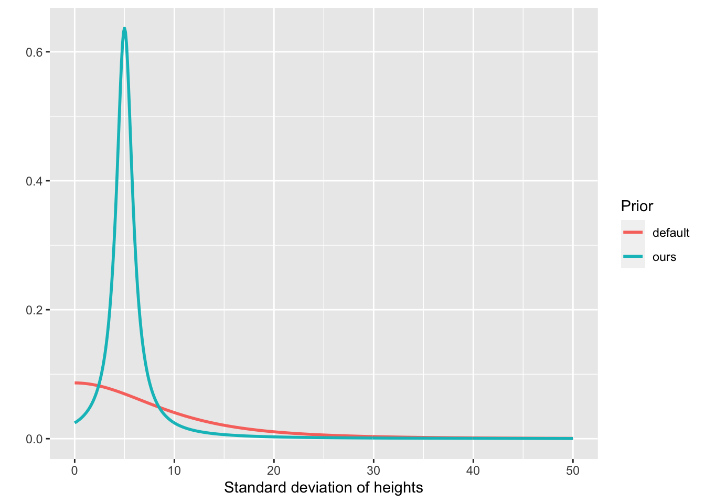
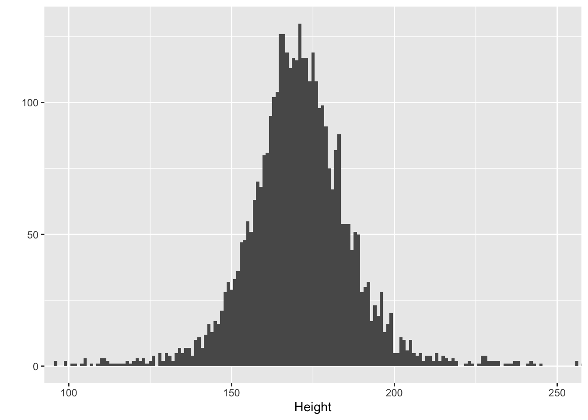
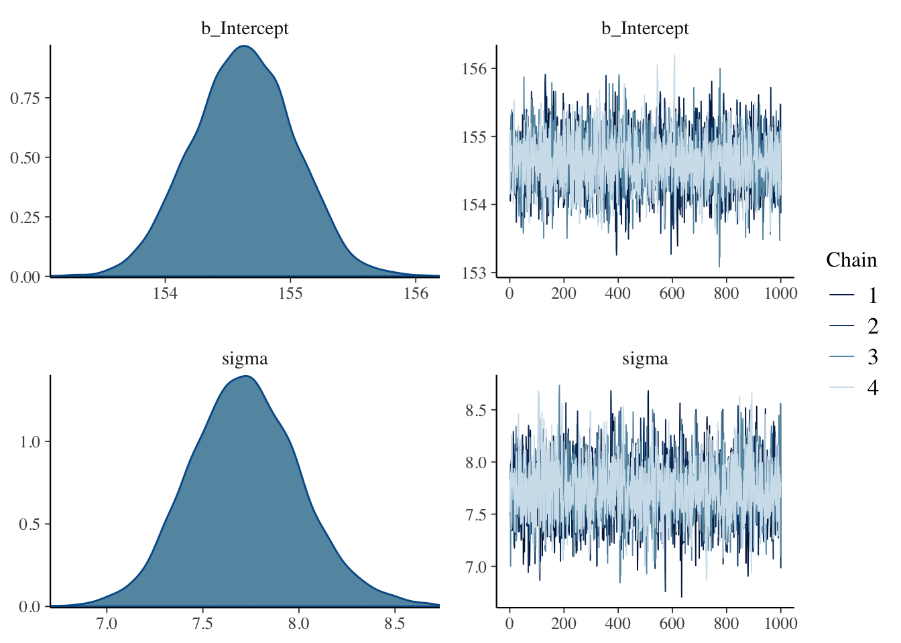
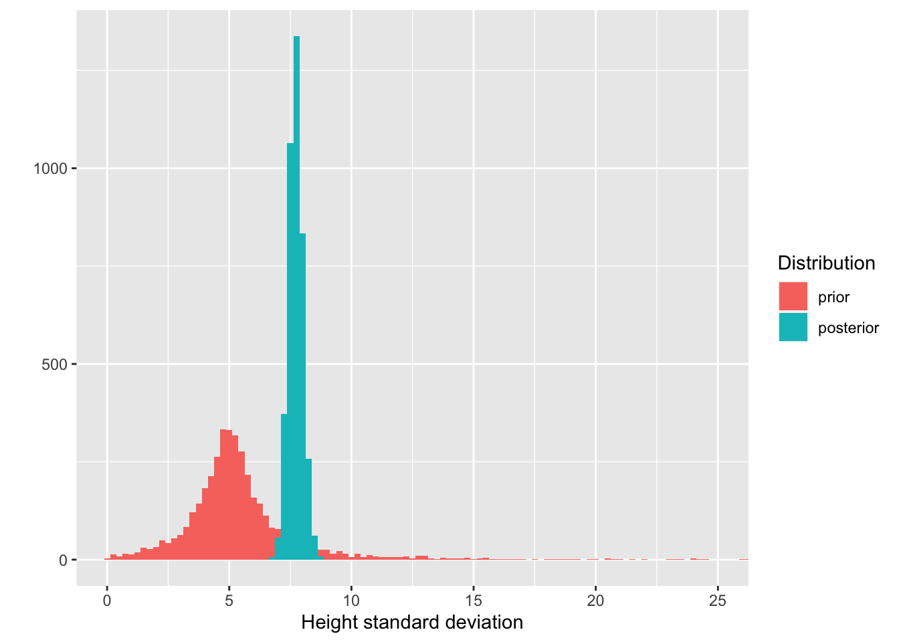
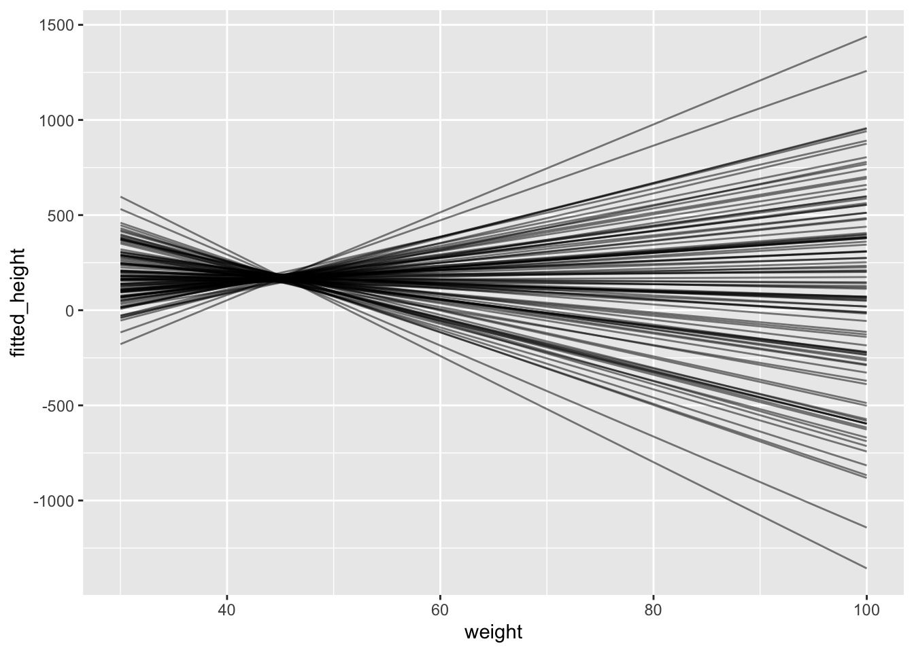
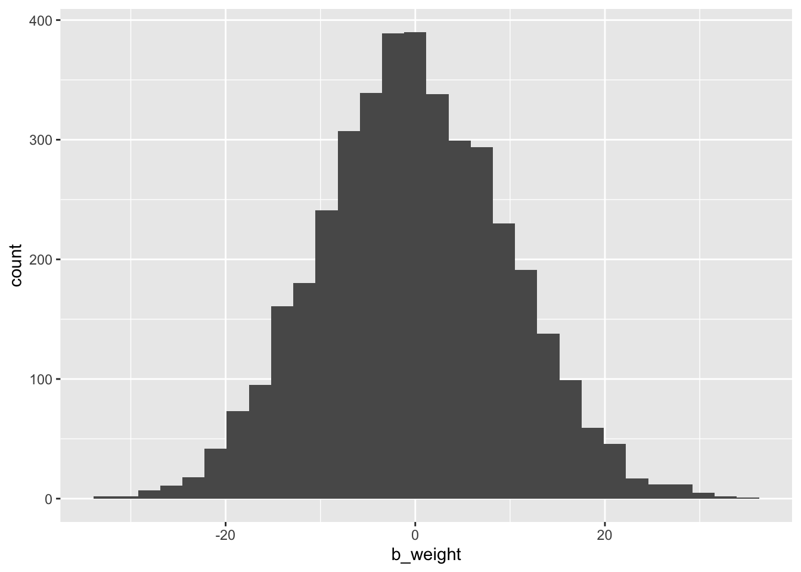
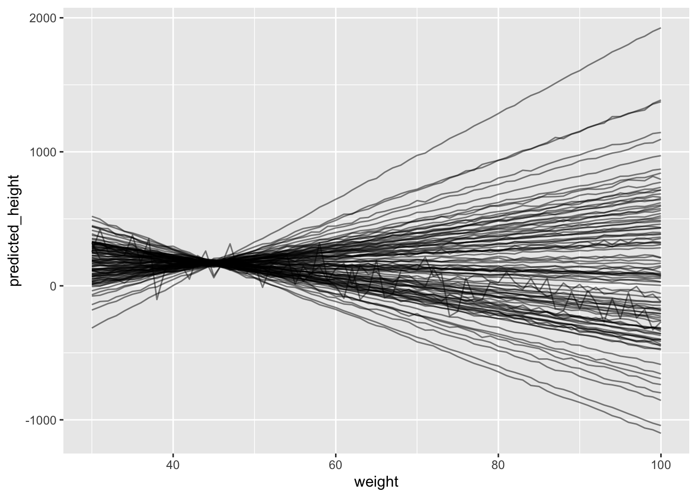
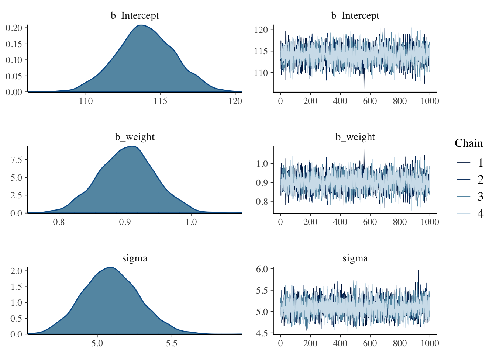
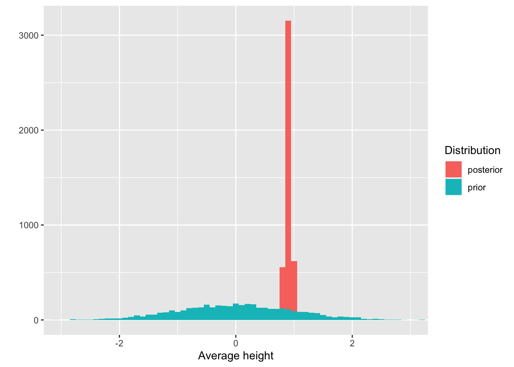

Code
# Load packages
library(tidyverse)
library(knitr)
library(brms)
library(tidybayes)
library(here)
# Load data
data <- read_csv(here("data", "Howell1.csv"))
# Set seed
set.seed(4)
# Set options
options(
knitr.kable.NA = "-",
digits = 2
)# Load packages
library(tidyverse)
library(knitr)
library(brms)
library(tidybayes)
library(here)
# Load data
data <- read_csv(here("data", "Howell1.csv"))
# Set seed
set.seed(4)
# Set options
options(
knitr.kable.NA = "-",
digits = 2
)In this post, I am going to work out a workflow that I think makes sense for analyzing data using Bayesian statistics.
The data we will use to play with is the same data Richard McElreath uses in Chapter 4 of his amazing book called Statistical Rethinking. It is a dataset containing people’s height, weight, age, and sex.
# Only select people older than 18
data <- filter(data, age >= 18)
# Show the first rows
data %>%
head() %>%
kable(col.names = str_to_title(names(.)))| Height | Weight | Age | Male |
|---|---|---|---|
| 152 | 48 | 63 | 1 |
| 140 | 36 | 63 | 0 |
| 137 | 32 | 65 | 0 |
| 157 | 53 | 41 | 1 |
| 145 | 41 | 51 | 0 |
| 164 | 63 | 35 | 1 |
The general idea behind Bayesian statistics is that you start with some beliefs about the data and then update those beliefs with the data, resulting in an updated belief.
This means that when we want to analyze this data, we should actually start with our beliefs. We should therefore not start by looking at the data. That’s why I only showed you the first few rows of the dataset here. Instead, we should construct a model that describes the different heights based on our a priori knowledge of people’s heights. In other words, we have to describe what we believe the heights to be. This is unlike what you have to do with frequentist statistics, so this part might be a bit tricky.
We will use the amazing brms package to do both analyze our beliefs and the data.
Let’s start with a simple intercept-only model to describe the heights. This means that our formula will be: height ~ 1.
We can now use brms to figure out which priors we need to set by running the get_prior() function.
get_prior(height ~ 1, data = data) prior class coef group resp dpar nlpar bound source
student_t(3, 154.3, 8.5) Intercept default
student_t(3, 0, 8.5) sigma defaultThis shows us that we need to set two priors, one for the Intercept and one for sigma. brms determined these priors automatically, but let’s take a look at them and see if we can do better.
The prior for the intercept indicates what we believe the average height to be.
brms has set the default Intercept prior as a Student t distribution with 3 degrees of freedom, a \(\mu\) of 154.3 and a \(\sigma\) of 8.5. That means brms starts off with a ‘belief’ that the average height is roughly normally distributed, with the most common average height being 154.3, but with quite some uncertainty. In fact, a Student t distribution has thick tails, especially compared to a normal distribution. This means that although you think the average height is most likely to be 154.3, you also think quite some other values are possible, even much smaller or much taller heights.
But this is the default prior. brms determines this automatic prior by peeking at the data, which is not what we want to do. Instead, we should create our own.
So what do I believe the average height to be? As a Dutch person, I might be under the impression that the average height is around 175 centimeters. This is probably too tall for an average, as we’re known for being quite tall. So I think the average should be a bit lower than 175, perhaps 170. I am not very sure, though. After all, I am far from an expert on people’s heights; I am only using my layman knowledge here. As a result, an average of 165 seems possible to me, too. So let’s describe my belief in the form of a distribution in which multiple averages are possible, to varying extents. We could use different types of distributions for this purpose. We could use a Student t distribution, but we can also use a normal distribution. We should use a Student t distribution with small degrees of freedom if we want to allow for the possibility of being very wrong (remember, it has thicker tails, so it covers a wider range of average heights). We’re not super uncertain about people’s heights, though, so let’s use a normal distribution.
Defining a normal distribution requires that we set the \(\mu\) and the \(\sigma\). The \(\mu\) we already covered (i.e., 170), so that leaves \(\sigma\). Let’s set this to 10 and see what happens by visualizing this prior. Below I plot both the default brms prior and our own.
tibble(height_mean = seq(from = 100, to = 250, by = .1)) %>%
mutate(
ours = dnorm(height_mean, mean = 170, sd = 10),
default = dstudent_t(height_mean, df = 30, mu = 154.3, sigma = 8.5),
) %>%
pivot_longer(cols = -height_mean, names_to = "prior") %>%
ggplot(aes(x = height_mean, y = value, color = prior)) +
geom_line(size = 1) +
labs(x = "Average height", y = "", color = "Prior") +
scale_x_continuous(breaks = seq(100, 250, 10))
So, it seems that compared to brms, our prior indicates that we believe the average height to be higher. In terms of the standard deviation, we both seem to be about equally uncertain about this average. To be fair, I think this prior of ours is not very plausible. Apparently we assign quite a chunk of plausibility to an average of 180 cm, or even 190 cm, which is unlikely. An average of 160 cm is more plausible to me than an average of 180, so I should probably lower the mu, or use more of a skewed distribution. Regardless, we can keep it like this. We’ll see later that our data easily overshadows our prior.
What about the standard deviation? I find setting the standard deviation of distribution of heights (not the mean of the heights) quite difficult. There are parts that are easy, such as the fact that the standard deviation has to be 0 or larger (it can’t be negative), but exactly how large it should be, I don’t know.
I do know it is unlikely to be close to 0, and unlikely to be very large. This means the peak should be somewhere above 0, with a tail to allow higher values but not too high. We can use a normal distribution for this with a mean above 0 and a particular standard deviation, and ignore everything that’s smaller than 0.
There is a downside of using a normal distribution, though. Normal distributions have long tails, but there is actually very little density in those tails. If we are quite uncertain about our belief about sigma, we should allow for this. One way to do this is by using a cauchy distribution. Cauchy distributions are like normal distributions, but with thicker tails. In fact, the cauchy distribution is a special case of the Student t distribution; they are equivalent if the degree of freedom is 1.
The cauchy distribution also requires two parameters: \(\mu\) and \(\sigma\). I set \(\mu\) to 5 and \(\sigma\) to 5 as well. Below I plot this prior and brms’s default prior.
tibble(height_sigma = seq(from = 0, to = 50, by = .1)) %>%
mutate(
default = dstudent_t(height_sigma, df = 3, mu = 0, sigma = 8.5) * 2,
ours = dstudent_t(height_sigma, df = 1, mu = 5, sigma = 1) * 2,
) %>%
pivot_longer(cols = -height_sigma, names_to = "prior") %>%
ggplot(aes(x = height_sigma, y = value, color = prior)) +
geom_line(size = 1) +
labs(x = "Standard deviation of heights", y = "", color = "Prior")
As you can see, both distributions have long tails, allowing for the possibility of high standard deviations. There are some notable differences between the two priors. Our prior puts more weight on a standard deviation larger than 0, while the default prior believes a standard deviation of 0 is more likely. However, both priors are quite weak. We’ll see that the data easily overshadows these priors.
Before we run the analysis, we can also check the results of our priors on the distribution of heights. This is called a prior predictive simulation.
Before we run our model, we should check what the effect is of all our priors combined. By setting the prior we can simulate what we believe the data to be. This is one way to see whether our priors actually make sense. This is called prior predictive checking.
We can use brms to do this by running the brm() function. However, instead of running the actual model, we tell it to only sample from the prior.
model_height_prior <- brm(
height ~ 1,
data = data,
family = gaussian,
prior = c(
prior(normal(170, 10), class = "Intercept"),
prior(cauchy(5, 5), class = "sigma")
),
cores = 4,
seed = 4,
sample_prior = "only",
file = "models/model_height_prior.rds"
)We then use the tidybayes package to draw samples from the prior and plot these draws.
model_height_prior %>%
predicted_draws(tibble(.rows = 1), prediction = "predicted_height") %>%
ggplot(aes(x = predicted_height)) +
geom_histogram(binwidth = 1) +
coord_cartesian(xlim = c(100, 250)) +
labs(x = "Height", y = "")Warning:
In predicted_draws(): The `prediction` argument is a deprecated alias for `value`.
Use the `value` argument instead.
See help("tidybayes-deprecated").
So, our priors result in a normal distribution of heights ranging from about 125 cm to 225 cm. This looks pretty reasonable to me, so let’s run the model for real now.
model_height <- brm(data = data,
family = gaussian,
height ~ 1,
prior = c(
prior(normal(170, 10), class = "Intercept"),
prior(cauchy(5, 1), class = "sigma")
),
cores = 4,
seed = 4,
sample_prior = TRUE,
file = "models/model_height.rds",
file_refit = "on_change"
)Before we check the results, let’s first check whether the chains look good.
plot(model_height)
It seems like they do. This also shows us the posterior distributions of the two parameters. We can also directly compare them to our priors.
results <- model_height %>%
posterior_samples() %>%
select(-lp__) %>%
pivot_longer(cols = everything()) %>%
mutate(
parameter = if_else(str_detect(name, "sigma"), "sigma", "intercept"),
distribution = if_else(str_detect(name, "prior"), "prior", "posterior"),
distribution = fct_relevel(distribution, "prior")
) %>%
select(-name)Warning: Method 'posterior_samples' is deprecated. Please see ?as_draws for
recommended alternatives.results_intercept <- filter(results, parameter == "intercept")
results_sigma <- filter(results, parameter == "sigma")
ggplot(results_intercept, aes(x = value, fill = distribution)) +
geom_histogram(binwidth = 0.5, position = "identity") +
coord_cartesian(xlim = c(145, 195)) +
labs(x = "Average height", y = "", fill = "Distribution")
Here we see that the posterior distribution of average heights is now much more narrow and centered around 156 cm.
ggplot(results_sigma, aes(x = value, fill = distribution)) +
geom_histogram(binwidth = 0.25, position = "identity") +
coord_cartesian(xlim = c(0, 25)) +
labs(x = "Height standard deviation", y = "", fill = "Distribution")
Similarly, we see that the posterior for sigma is also much more narrow and around 7.75.
We can call up the estimates and the 95% confidence intervals by printing the model object.
model_height Family: gaussian
Links: mu = identity; sigma = identity
Formula: height ~ 1
Data: data (Number of observations: 352)
Draws: 4 chains, each with iter = 2000; warmup = 1000; thin = 1;
total post-warmup draws = 4000
Population-Level Effects:
Estimate Est.Error l-95% CI u-95% CI Rhat Bulk_ESS Tail_ESS
Intercept 154.63 0.41 153.83 155.40 1.01 3354 2418
Family Specific Parameters:
Estimate Est.Error l-95% CI u-95% CI Rhat Bulk_ESS Tail_ESS
sigma 7.72 0.29 7.18 8.32 1.00 3632 2741
Draws were sampled using sampling(NUTS). For each parameter, Bulk_ESS
and Tail_ESS are effective sample size measures, and Rhat is the potential
scale reduction factor on split chains (at convergence, Rhat = 1).Let’s repeat the same steps but this time we add a predictor to the model. We’ll add weight as a predictor to see its relationship with height.
The formula becomes: height ~ 1 + weight.
So let’s see which priors we need to set for this model.
get_prior(height ~ 1 + weight, data = data) prior class coef group resp dpar nlpar bound
(flat) b
(flat) b weight
student_t(3, 154.3, 8.5) Intercept
student_t(3, 0, 8.5) sigma
source
default
(vectorized)
default
defaultThis time the output is a bit more confusing. We seem to have two additional priors: a default b prior and a vectorized b prior for the weight coefficient. The reason there are now two additional priors is that there are two different ways to specify a prior here. We can either set a specific prior for the weight coefficient, or set a prior on all the b-class priors. In this specific case, with only one additional predictor, it means we can use either technique and we only need to set one of them.
What should our prior for weight be? In other words, for every increase of 1 in weight, how much do we think this relates to an increase (or decrease) in height? This is likely to be a positive relationship (taller people are more likely to be heavier as well), but we can also refrain from indicating the direction. This means we can specify a distribution of possible effects, centered around 0. The only decision we’re left with is setting the standard deviation. Let’s try a value of 10 and see what this means.
model_height_weight_prior <- brm(
height ~ 1 + weight,
data = data,
family = gaussian,
prior = c(
prior(normal(170, 10), class = "Intercept"),
prior(cauchy(5, 1), class = "sigma"),
prior(normal(0, 10), coef = "weight")
),
cores = 4,
seed = 4,
sample_prior = "only",
file = "models/model_height_weight_prior.rds"
)We can do our prior predictive checking in two different ways now. We can check only the effect of our prior on weight, or also include the prior on sigma.
In the former case, we use fitted_draws() to obtain draws from our posterior, like so:
draws <- fitted_draws(
model_height_weight_prior,
tibble(weight = seq(30, 100, 1)),
value = "fitted_height", n = 100
) Warning: `fitted_draws` and `add_fitted_draws` are deprecated as their names were confusing.
Use [add_]epred_draws() to get the expectation of the posterior predictive.
Use [add_]linpred_draws() to get the distribution of the linear predictor.
For example, you used [add_]fitted_draws(..., scale = "response"), which
means you most likely want [add_]epred_draws(...).ggplot(draws, aes(x = weight, y = fitted_height, group = .draw)) +
geom_line(alpha = .5) 
samples <-model_height_weight_prior %>%
posterior_samples()Warning: Method 'posterior_samples' is deprecated. Please see ?as_draws for
recommended alternatives.ggplot(samples, aes(x = b_weight)) +
geom_histogram()`stat_bin()` using `bins = 30`. Pick better value with `binwidth`.
In the latter case we use predicted_draws(), like so:
model_height_weight_prior %>%
predicted_draws(tibble(weight = seq(30, 100, 1)), prediction = "predicted_height", n = 100) %>%
ggplot(aes(x = weight, y = predicted_height, group = .draw)) +
geom_line(alpha = .5)Warning:
In predicted_draws(): The `prediction` argument is a deprecated alias for `value`.
Use the `value` argument instead.
See help("tidybayes-deprecated").Warning:
In predicted_draws(): The `n` argument is a deprecated alias for `ndraws`.
Use the `ndraws` argument instead.
See help("tidybayes-deprecated").
In both cases, we see that we get quite some implausible values. So let’s take a prior that produces fewer crazy observations, such as a prior of normal(0, 1).
model_height_weight_prior2 <- brm(
height ~ 1 + weight,
data = data,
family = gaussian,
prior = c(
prior(normal(170, 10), class = "Intercept"),
prior(cauchy(5, 1), class = "sigma"),
prior(normal(0, 1), coef = "weight")
),
cores = 4,
seed = 4,
sample_prior = "only",
file = "models/model_height_weight_prior2.rds"
)
model_height_weight_prior2 %>%
fitted_draws(tibble(weight = seq(30, 100, 1)), value = "fitted_height", n = 100) %>%
ggplot(aes(x = weight, y = fitted_height, color = .draw, group = .draw)) +
geom_line(alpha = .5)Warning: `fitted_draws` and `add_fitted_draws` are deprecated as their names were confusing.
Use [add_]epred_draws() to get the expectation of the posterior predictive.
Use [add_]linpred_draws() to get the distribution of the linear predictor.
For example, you used [add_]fitted_draws(..., scale = "response"), which
means you most likely want [add_]epred_draws(...).
That looks much better. It could still be refined because it produces several highly implausible results, but let’s stick with this for now and run the model.
model_height_weight <- brm(
height ~ 1 + weight,
data = data,
family = gaussian,
prior = c(
prior(normal(170, 10), class = "Intercept"),
prior(cauchy(5, 1), class = "sigma"),
prior(normal(0, 1), coef = "weight")
),
cores = 4,
seed = 4,
sample_prior = TRUE,
file = "models/model_height_weight.rds"
)Let’s check the chains.
plot(model_height_weight)
And let’s compare the prior and posterior distribution of our weight predictor.
results <- model_height_weight %>%
posterior_samples() %>%
select(prior_b_weight, b_weight) %>%
pivot_longer(cols = everything()) %>%
mutate(
distribution = if_else(str_detect(name, "prior"), "prior", "posterior")
) %>%
select(-name)Warning: Method 'posterior_samples' is deprecated. Please see ?as_draws for
recommended alternatives.ggplot(results, aes(x = value, fill = distribution)) +
geom_histogram(binwidth = 0.1) +
coord_cartesian(xlim = c(-3, 3)) +
labs(x = "Average height", y = "", fill = "Distribution")
Again our prior was quite broad and our posterior is much more narrow. In fact, the estimates are:
model_height_weight Family: gaussian
Links: mu = identity; sigma = identity
Formula: height ~ 1 + weight
Data: data (Number of observations: 352)
Draws: 4 chains, each with iter = 2000; warmup = 1000; thin = 1;
total post-warmup draws = 4000
Population-Level Effects:
Estimate Est.Error l-95% CI u-95% CI Rhat Bulk_ESS Tail_ESS
Intercept 113.99 1.95 110.21 117.81 1.00 3960 3085
weight 0.90 0.04 0.82 0.99 1.00 3961 3189
Family Specific Parameters:
Estimate Est.Error l-95% CI u-95% CI Rhat Bulk_ESS Tail_ESS
sigma 5.09 0.19 4.74 5.48 1.00 4790 2766
Draws were sampled using sampling(NUTS). For each parameter, Bulk_ESS
and Tail_ESS are effective sample size measures, and Rhat is the potential
scale reduction factor on split chains (at convergence, Rhat = 1).Weight is positively related with height (0.90), with a 95% CI ranging from 0.82 to 0.99.